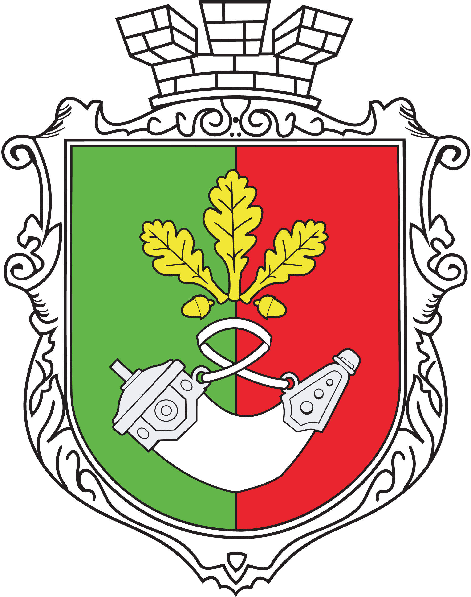
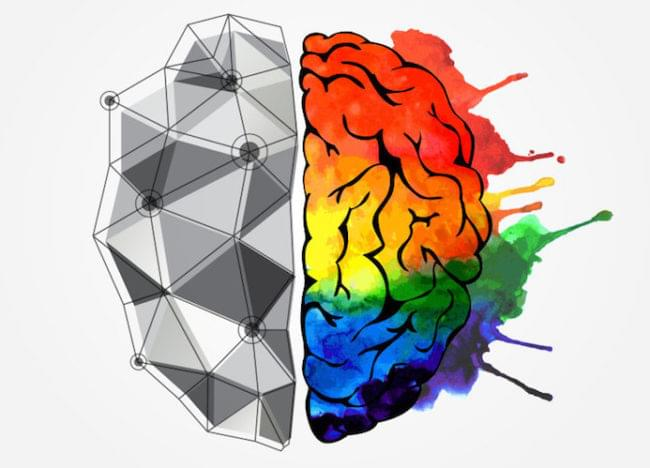

Музыкальная школа предлагает уроки фортепиано для взрослых и детей от 3-х лет, в том числе онлайн уроки фортепиано по скайпу или Google Meet. Интересная и увлекательная подача теории, практика на инструменте под чутким руководством профессиональных педагогов дают возможность овладеть фортепиано до уровня выступлений на международных конкурсах.
Наша школа - самая призная школа, проводит обучение игры на пианино в Кривом Роге для взрослых и детей. На занятиях для взрослых мы ставим в приоритет баланс качества обучения с оптимально подобранным для вас графику посещения. Независимо от наличия или отсутствия у вас опыта, подход к процессу обучения индивидуален. Уже после первого занятия для вас станет очевидно, насколько огромный ваш творческий потенциал.
Для детей уроки фортепиано в нашей школе проходят в дружеской, непринужденной атмосфере, нацеливает ребенка на обучение без давления, критики и негативных оценок. Мы используем методики, которые включают в себя поощрение развития творческих способностей через познание удивительного мира искусства игры на фортепиано. Малыши знакомятся с произведениями великих композиторов, учатся понимать их и любить.
Такой подход к развитию дает возможность воспитывать всесторонне развитых, открытых к новому и эмоционально зрелых детей.
Обучение на пианино в нашей школе развивает ребенка психологически и умственно через мелкую моторику рук, учит координации тела, формирует правильную осанку и изящные кисти. Опыт выступлений на конкурсах различных уровней, в том числе международных, развивает артистизм, уверенность в себе, смелость перед публикой, воспитывает соревновательный дух и стремление к успеху.
Наша музыкальная школа оснащена современными музыкальными инструментами, которые постоянно обновляются и обслуживаются. Для занятий вам необходим минимальный набор - нотная тетрадь и тетрадь в клеточку, ручка, желание учиться и познавать новое!
Для занятий вы можете выбрать инструмент, который наиболее подходит вам или вашему ребенку - классическое фортепиано, синтезатор или цифровое пианино. Запишитесь на пробное занятие, на котором опытный педагог подробно расскажет о процессе обучения, поможет выбрать инструмент. Только коснувшись клавиш, юный музыкант будет с нетерпением ждать нового урока!
Приходите всей семьей на курсы фортепиано в Кривом Роге для детей и взрослых - здесь мечты становятся реальностью!